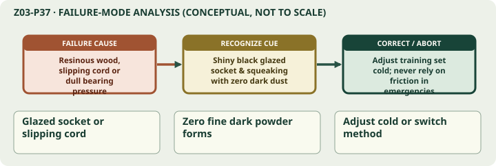

Z03-P37 · Fire and ignition · Adapted historical material
Diagnose friction-drill polishing, cord slip and resin glazing in training
Recognize common mechanical failure modes during supervised wood-friction firecraft practice.
When it applies · Supervised educational practice with identified training wood sets on authorized sites; conceptual troubleshooting only.
Equipment · Cold training bow-drill assembly inspected with an instructor.

Actions
- Recognize shiny glazed black wood inside the hearth socket (polishing) as a sign of resinous wood, mismatched wood hardness or excess pressure without fine dust generation—dust must look dry, dark brown and powdery.[C12, ED]
- Recognize squeaking spindles or a slipping bowstring as insufficient cord tension, glossy spindle surface or excessive friction at the top bearing block rather than the bottom hearth contact.[C12, ED]
- Diagnose and adjust components cold between controlled training runs rather than exhausting learners in continuous fruitless sawing.[C12, E10, ED]
Failure recognition · Confusing shiny burned squeaking wood and white steam with near-ember success during a training session.[C12, ED]
Verify · Identify the difference between coarse light shavings, glazed polished sockets and fine dark-brown ember-capable powder on a cold training set.[C12, ED]
Stop or change course · End live friction trials immediately if materials are damp/resinous, hands blister or fatigue impairs safety; never rely on unpracticed friction drilling in an actual cold emergency.[C12, C08, E10]
Evidence and editorial notes
- C08 · NWS · What To Do If You're Caught in a Winter Storm (current web edition)
- Section: Outside > If there is no shelter nearby · Conditions: Stranded outdoors during a winter storm
Support: Seek shelter and block wind and wet exposure. Reduce heat loss from contact with snow or ground.
Limitations: Does not guarantee overnight survival without adequate insulation or rescue. · Conflicting evidence: None; reinforces no-fire exposure control priority.
Editorial note: Anchors no-fire fallback when ignition fails or is banned. · Specialist reviewer: Cold-weather shelter specialist
Primary source · checked 2026-11-24 - C12 · NPS · Forces and Tools (current web edition)
- Section: Background and Procedure > Bow Drill · Conditions: Interpretive demonstration using known materials
Support: Reciprocating motion turns a spindle against a hearth. Friction heats wood dust until it can sustain an ember.
Limitations: Moisture, resinous wood, poor notch geometry, or physical fatigue can prevent ember formation. · Conflicting evidence: Does not guarantee ignition in emergency field conditions; conceptual/supervised training only.
Editorial note: Clearly distinguishes cold mechanism instruction from field-validated emergency ignition. · Specialist reviewer: Fire prevention and mechanism reviewer
Primary source · checked 2026-11-24 - E10 · NWS · What To Do If You're Caught in a Winter Storm (current web edition)
- Section: Outside > Protect yourself from frostbite and hypothermia · Conditions: Outdoor winter storm
Support: Keep clothing dry and avoid overexertion. Wetness accelerates cooling.
Limitations: Cotton retains moisture and accelerates conductive and evaporative heat loss. · Conflicting evidence: None; reinforces moisture-management layering.
Editorial note: Links sweat management to overnight insulation integrity. · Specialist reviewer: Cold-weather shelter and wilderness medicine
Primary source · checked 2026-11-24
Source lineage · B008/B010 mechanism plates and NPS Forces and Tools; adapted historical material · Classification · Adapted historical material.